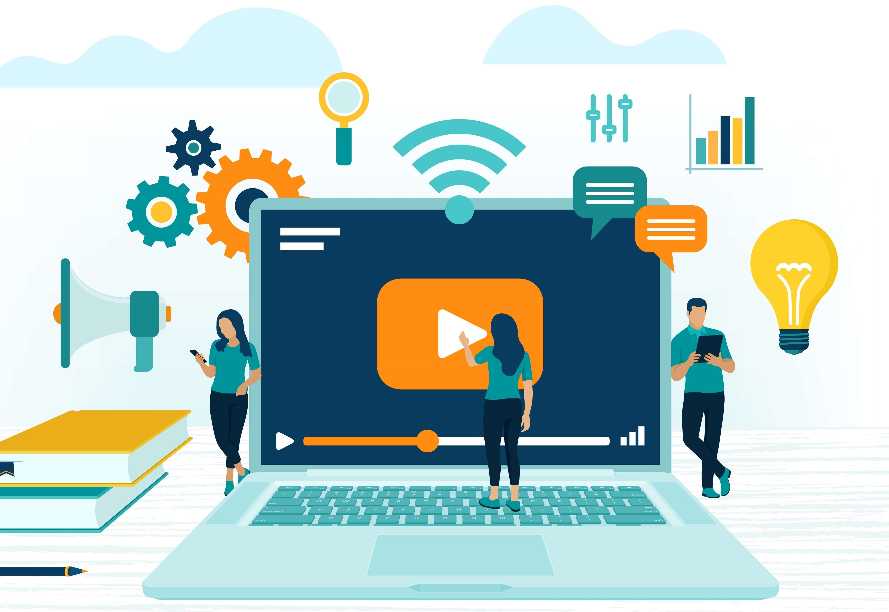
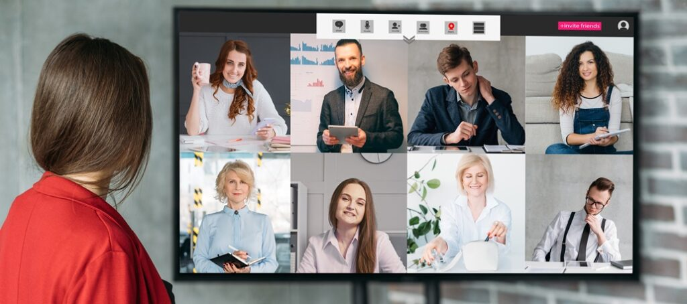

Descubre nuestra plataforma educativa en línea, diseñada para ofrecer una experiencia de aprendizaje flexible y accesible. Conoce más sobre nuestras herramientas interactivas, recursos educativos y soporte personalizado para ayudarte a alcanzar tus metas académicas.
Nuestra plataforma educativa en línea ofrece la oportunidad de aprender con maestros en tiempo real. Participa en clases interactivas, recibe retroalimentación inmediata y colabora con tus compañeros desde cualquier lugar. Aprovecha la flexibilidad y la calidad de la educación en línea para alcanzar tus objetivos académicos.
Explora las oportunidades de colaboración con otros alumnos a través de nuestra plataforma. Participa en proyectos grupales, discute temas en foros y aprovecha los espacios presenciales disponibles para un aprendizaje más enriquecedor.
Participa en reuniones regulares con maestros y compañeros para mejorar tu aprendizaje. Estas sesiones te permiten resolver dudas, recibir retroalimentación y colaborar en proyectos, creando un entorno de estudio más dinámico y efectivo.

Nuestra plataforma educativa en línea te permite gestionar tu tiempo de manera eficiente, facilitando un equilibrio entre tus estudios, trabajo y vida personal. Aprovecha la flexibilidad de nuestros horarios para aprender a tu propio ritmo y sin comprometer tus otras responsabilidades.

Participa en reuniones con profesionales de diversas industrias para conocer sus ofertas laborales y oportunidades de carrera. Estas sesiones te permitirán establecer contactos valiosos, obtener información sobre el mercado laboral y descubrir cómo puedes aplicar tus habilidades y conocimientos en el mundo real.